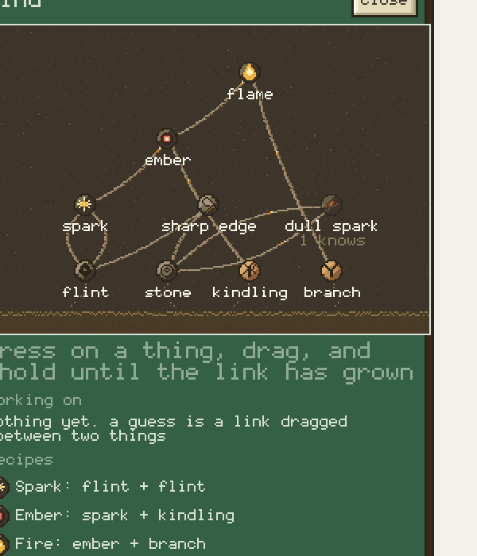

The mind
A discovery is the player's guess, not the player's chores. The people carry what they have met in a tree of neurons, the player drags a link between two of them, and the most curious person who can fetch it goes and tries. What works becomes a recipe, and a recipe becomes an order on the radial menu.
Source: src/sim/mind/neurons.ts, src/sim/mind/mind.ts, src/sim/people/people.ts, src/ui/MindPanel.tsx, src/ui/mindArt.ts, src/pixel/ui/neurons.ts
1Neurons are earned by living
A neuron is something a person has met. Seeing a flint lying within 7 tiles (NOTICE_TILES) or holding it lights flint in that person, and nothing is in a mind that the world did not put there. There are things (flint, stone, kindling, branch, each tied to an ItemType) and happenings (spark, ember, flame and the rest, results that nobody can pick up). Knowledge lives in people (Mind.known, one byte per person and neuron: 0 unknown, 1 heard of, 2 knows) but the player sees one tree, where a neuron is as bright as the share of people who know it.
| neuron | kind | how it is earned | sector, ring |
|---|---|---|---|
| flint | thing | seen lying within 7 tiles, or held | tools, 1 |
| stone | thing | seen lying within 7 tiles, or held | tools, 1 |
| kindling | thing | seen lying within 7 tiles, or held | fire, 1 |
| branch | thing | seen lying within 7 tiles, or held | fire, 1 |
| spark | happening | flint + flint | fire, 2 |
| dull spark | happening | stone + stone (a lesser result) | tools, 2 |
| ember | happening | spark + kindling | fire, 3 |
| smoke | happening | spark + branch (a lesser result) | fire, 3 |
| flame | happening | ember + branch, or a burning branch seen | fire, 4 |
| sharp edge | happening | flint + stone | tools, 2 |
| plant fibre | thing | seen lying within 7 tiles, or held | tools, 1 |
| binding | happening | branch + plant fibre | tools, 2 |
| stone tool | happening | sharp edge + binding, or a hand axe seen | tools, 3 |
| berries | thing | seen lying within 7 tiles, or held | food, 1 |
| grubs | thing | seen lying within 7 tiles, or held | food, 1.7 |
| egg | thing | seen lying within 7 tiles, or held | food, 1 |
| cord | thing | plant fibre + plant fibre | construction, 2 |
| basket | thing | cord + plant fibre | construction, 3 |
| cooked | thing | flame + egg | fire, 4 |
| fish | thing | seen lying within 7 tiles, or held | food, 2.8 |
| rabbit | thing | seen lying within 7 tiles, or held | food, 2.8 |
| spear | happening | sharp edge + branch | tools, 3.6 |
| snare | happening | cord + branch | food, 4 |
| frame | happening | branch + branch | construction, 2 |
| bed | happening | frame + plant fibre | construction, 3.6 |
| shelter | happening | frame + cord | construction, 3 |
| hut | happening | shelter + plant fibre | construction, 4 |
2The recipes
Fire is three small discoveries in a chain, each its own moment, and a pair that is not in the table leaves a withered dead end so nobody tries it twice. A dead end fades from the net over about a minute (DEAD_SECONDS) so the graph does not fill with them, but the pair stays tried. A lesser result (a dull spark from two stones, smoke from a spark on a green branch) turns the ? into what actually happened and hints that the right pair is close.
| pair | outcome | result | used up | made | carried out as |
|---|---|---|---|---|---|
| flint + flint | success | spark | nothing | nothing | a step of a longer chain |
| spark + kindling | success | ember | dry kindling | nothing | a step of a longer chain |
| ember + branch | success | flame | dry kindling, branch | burning branch | order Kindle Campfire |
| flint + stone | success | sharp edge | nothing | nothing | a step of a longer chain |
| branch + fibre | success | binding | branch, plant fibre | nothing | a step of a longer chain |
| sharp + binding | success | stone tool | branch, plant fibre, flint | hand axe | order Knap Hand Axe |
| fibre + fibre | success | cord | plant fibre | cord | order Twist Cord |
| cord + fibre | success | basket | plant fibre, cord | basket | order Weave Basket |
| flame + egg | success | cooked | dry kindling, branch, egg | burning branch, roast | a step of a longer chain |
| branch + branch | success | frame | nothing | nothing | a step of a longer chain |
| frame + fibre | success | bed | nothing | nothing | a step of a longer chain |
| frame + cord | success | shelter | nothing | nothing | a step of a longer chain |
| shelter + fibre | success | hut | nothing | nothing | a step of a longer chain |
| sharp + branch | success | spear | nothing | nothing | a step of a longer chain |
| cord + branch | success | snare | nothing | nothing | a step of a longer chain |
| stone + stone | lesser | dull spark | nothing | nothing | a hint |
| spark + branch | lesser | smoke | nothing | nothing | a hint |
The first success of flame is the fire milestone and sets hasDiscoveredFire, the first stone tool (a sharp edge bound to a handle: three small discoveries, flint + stone, branch + plant fibre, then the two together) sets hasDiscoveredFlintKnapping, so the world opens through what the people worked out and not through a button. Proven, the chain becomes an order: Kindle Campfire plans a campfire (Blueprint.Kindle) that fetches 2 flint, 1 kindling and 4 branches and strikes the fire itself, and Knap Hand Axe is worked at a knapping floor, which only appears among the buildings once the stone tool is proven. The radial menu groups what can be built under Erect, a second level that replaces the first (storage, the campfire, the torch, and the knapping floor once it is unlocked), and it appears after the first fire.
3A link grows a ?
In the tree the player presses on a neuron, drags, and holds: the link grows for HOLD_SECONDS 0.9 and pulls back if the button is let go early, so a guess takes a moment of thought. A full link released over a neuron (or the same one, for flint + flint) sends wonder and a hypothesis is born: owned by the group, shown as a ? and at the same time the work order. At most MAX_OPEN 3 are open at once. A ? resolves exactly once, as a success, a lesser result or a scar, and is never tried again.
- WhoEveryone with no critical need and a curiosity over 0.12. The most curious takes it, not the nearest, and holders of both parents are preferred to people who must go and ask.
- TalkIf they hold only one parent they walk to the most curious holder of the other, talk for 2.4 s, and now have it as heard of.
- FetchThe leaves of the chain are the needs: they carry each item, one at a time, to a work tile. No flint in reach and the guess waits, with the reason in the list.
- TryThey kneel for 3.4 s, striking. What the chain uses up is removed, what it makes is laid down, and the pair is resolved.
- SeeEveryone within 6 tiles and in sight (after dark, in firelight) learns the result at once. Others only hear of it.
4Beds and huts
Proving bed adds Bed under Erect on the action wheel and proving hut adds Hut. Each is a plan like the campfire's: a builder carries the materials to the tile (a bed is 2 branches and 3 plant fibre, a hut 5 branches, 1 cord and 4 plant fibre) and the building rises when the last one is down. A bed is a tile a person can step on, a hut is a wall and is slept beside, and either can be taken down again.
A tired person (over 0.6) with a bed or hut within 40 tiles walks to the nearest one nobody else has taken, with or without a fire. Asleep, tiredness falls 1.5 times as fast on a bed and 2.2 times as fast beside a hut (on top of the 3 times of sleeping at all), and the body loses heat at 0.75 and 0.35 of the usual rate. Branches and fibre are no longer only the starter scatter: every 18 s, while fewer than 10 of one lie about, one appears beside a tree or fallen trunk (branch) or beside grass, bush or scrub (fibre) within reach of a person.
5Fish and rabbits
Proving spear (sharp edge + branch) adds Go Fishing / Stop Fishing under Orders, and proving snare (cord + branch) adds Snare under Erect. Both need an ordinary storage for the catch.
An angler walks to the nearest fresh shore, stands 12 s and casts three times; a cast takes one fish from the nearest shoal within 6 tiles (Fish.take, one fish off that shoal's headcount, so the pond really holds fewer) and the fish is carried to a storage. A snare is a building plan of 1 branch and 1 cord. Every 20 s each empty snare catches a rabbit with probability 1 - exp(-0.3 x adults), where adults is the rabbit stock of the 16 tile food-web patch it stands in, and that adult is taken out of the stock (Snares). The rabbit lies on the snare until someone hauls or eats it. Fish (190 kcal) and rabbit (280 kcal) are food like berries, and the Roast Food order roasts them as well as eggs and grubs (a roast is 320 kcal).
6Curiosity
Every person has a curiosity rolled from the seed (0.45 to 0.95). What counts is curiosity x comfort, where comfort is 0 if they are hungry or thirsty over 0.8, tired over 0.85 or cold, and otherwise 0.25 plus 0.75 of how fed, watered and rested they are. A comfortable group researches and a group in trouble survives first. The mind is asked after drinking, eating, sleeping and feeding the fire, so curiosity never beats a need. A tryer who stops dropping the guess is released, and the guess waits RETRY_SECONDS 25 for the next most curious.
7Showing beats telling
A neuron told is dim (heard of) and turns solid only when the person has done or seen it. People within 3 tiles also share neurons slowly on their own, 2.5 times faster beside a fire. Everyone who learns shows a small ring of pixels over their head.
- Adam
- Eve
- guesses open
8On the screen
A brain button beside the day dial counts the guesses being worked on and glows when a neuron is learned. It opens the tree: dithered branches whose pixels crawl while a guess is open and carry a bright pixel along a proven link, neurons as 16 by 16 coins that flicker when only some people know them, and a ring round the neurons held by the selected person. Under it a list says who is doing what (flint + flint, Eve, fetching) and clicking a line moves the camera there, and the proven recipes. In the world a person carrying a ? has one over their head, drawn like the critical !. The same panel is on the zoo's toolbar (the brain), which gives the placed humans a real Mind.
